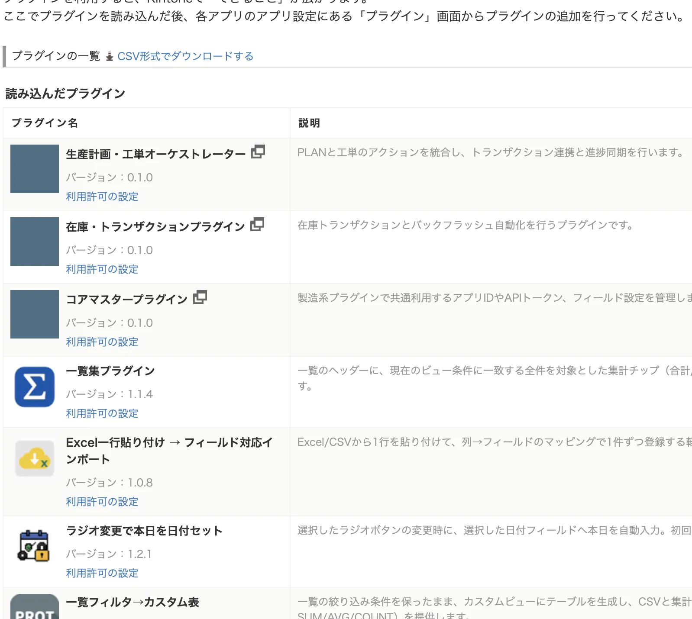

配布ファイル構成
- プラグイン本体（ZIP）：kintone へそのままアップロードしてください。
- 導入ガイド（PDF）：本ドキュメント。社内共有にもご利用ください。
想定読者
kintone の管理機能にアクセスできる担当者。
お問い合わせ前に
プラグイン名・バージョン、発生現象が分かるスクリーンショットをご用意いただくと解決がスムーズです。
1. 導入前のチェックリスト
- kintone の「システム管理」メニューにアクセスできる権限をお持ちですか？
- 利用する環境（本番 or テスト）でプラグインの動作検証を行うスペース／アプリを用意しましたか？
- ご利用のブラウザーは最新版ですか？（Google Chrome を推奨）
- 既存のプラグインと併用する場合、念のためテストアプリで競合が無いか確認することをおすすめします。
ご注意：プラグインの追加や更新は、アプリに影響が出る可能性があります。本番アプリに適用する前にテストアプリで検証してください。
2. プラグイン配布物の確認
ダウンロードした ZIP の中身を確認し、少なくとも以下のファイルが揃っていることを確かめてください。
- プラグイン本体（ZIP）：kintone にアップロードするファイルです。解凍せず、そのまま使用します。
- 導入ガイド PDF：操作手順書。本ドキュメントが該当します。
ヒント：Windows で ZIP を右クリックし「すべて展開」を選ぶとフォルダーが開きます。Mac の場合はダブルクリックで展開されます。
3. kintone へのプラグイン追加手順
-
kintone のシステム管理を開きます
画面右上のアカウントメニューから 「システム管理」（または「管理者設定」）を選択します。

-
プラグイン管理画面へ移動
左側のメニューから 「カスタマイズ／サービス連携」>「プラグイン」 を開き、左上の 「読み込む」>「参照」 をクリックします。
-
プラグインファイルを選択
配布されたプラグイン本体（ZIP）を選択し、「読み込む」をクリックします。アップロード完了後、一覧に表示されます。

-
有効化の準備
追加できたら、該当プラグインのステータスが「利用可能」になっていることを確認してください。アプリへの適用は次の章で行います。
4. アプリでの設定と有効化
-
プラグインを使うアプリを開く
アプリの設定（歯車アイコン）> 「プラグイン」 を選択し、「+ プラグインを追加」 をクリックします。
-
プラグインの設定画面に入る
一覧から対象プラグインを選択し、「設定」ボタンをクリック。画面の案内に沿って必要項目を入力し、保存します。

-
アプリを更新（再利用）
設定を保存したら、アプリ設定画面右上の 「保存」、続いて黄色の 「アプリを更新」 ボタンを押してください。これでプラグインが有効になります。
-
動作確認
アプリ画面に戻り、想定どおりに動作するか確認します。問題がある場合は設定値や他プラグインとの競合をチェックしてください。
5. プラグインのアップデート方法
- 配布サイトから最新版のプラグイン本体（ZIP）とガイドをダウンロードします。
- 画面右上のアカウントメニューから 「システム管理」（または「管理者設定」）を選択します。
- 左側のメニューから 「カスタマイズ／サービス連携」>「プラグイン」 を開き、左上の 「読み込む」>「参照」 をクリックします。
- 配布されたプラグイン本体（ZIP）を選択し、「読み込む」をクリックします。アップロード完了後、最新版に更新されます。
- 必要に応じて、リリースノートや変更点をアプリ利用者へ共有してください。
- 旧バージョンの ZIP はバックアップとして保管しておくと、万一のロールバック時に安心です。
6. トラブルシュート
画面が真っ白になる／プラグインが動かない場合
- ブラウザーの再読み込み（Ctrl + F5 または Cmd + Shift + R）を実行してください。
- 他プラグインを一時的に無効化し、競合が無いか切り分けます。
- プラグイン設定内容が正しいか、入力漏れが無いか確認します。
アップデート後にエラーが出る場合
- アプリを更新し忘れていないか確認してください。
- アプリのカスタマイズ JavaScript / CSS との競合も考えられるため、一時的に無効化して様子を見ます。
- エラーメッセージが表示される場合は、スクリーンショットを撮影してサポート窓口へお知らせください。
7. サポート窓口と連絡先
解決しない場合は、以下の情報を添えてサポート窓口までご連絡ください。
- ご利用中のプラグイン名とバージョン
- 発生日時・操作手順
- 表示されたエラーメッセージやスクリーンショット
- kintone のドメイン名（例：example.cybozu.com）
ご購入時にご案内したメールアドレス / フォームまでご連絡ください。